Project - A Quantitative Data Analysis Project
Mr. Sut Zaw Aung (Student)
DTI (Digital Technology Innovation) – Kasem Bundit University (Bangkok, Thailand)
Project Source: https://github.com/Paul2004-sza/Myanmar_Students_Mobility_Analysis
Image source: TheStar30yearsOnline/thesrar.com
Global student mobility has expanded significantly over the past decade, driven by globalization, digital connectivity, and the growing demand for internationally recognized qualifications. Myanmar has increasingly participated in this global trend, with a rising number of students pursuing higher education opportunities abroad.
Although no centralized global database provides an exact figure for Myanmar students studying overseas in 2026, international education statistics from organizations such as UNESCO estimate that approximately 12,800–17,000 Myanmar students were enrolled in foreign institutions in 2022. Major destination countries have included Thailand, Japan, the United States, Singapore, China, South Korea, and Western nations such as the United Kingdom and Canada. Educational mobility has continued to evolve in response to economic conditions, academic access, and long-term career planning considerations.
Image source: BSS News, "Myanmar classrooms become latest battleground as junta opens schools", 4 February 2026 (www.bssnews.net).
In recent years, Myanmar has experienced national institutional and governance transitions. These broader structural developments form part of the contextual environment in which students evaluate their educational investments and future career pathways. Decisions about whether to return home after studying abroad are often influenced by perceptions of economic opportunity, labor market competitiveness, political stability, professional growth prospects, and personal aspirations.
This study analyzes survey responses from 82 Myanmar students currently enrolled in higher education institutions across Thailand, Singapore, England, Taiwan, the United States, and Japan.
The research aims to:
The dataset represents an exploratory sample of internationally mobile Myanmar students. While not nationally representative, it provides structured empirical insight into migration intentions and human capital mobility during a transitional period.
This study employs:
These methods allow for both descriptive interpretation and inferential evaluation of whether observed patterns differ significantly from benchmark assumptions (e.g., 50% return intention).
The study adopts a quantitative exploratory research design, and results should be interpreted within the limitations of sample size (n = 82) and voluntary survey participation.
Image source: Global Citizen (2026).
This research contributes to academic and policy discussions in:
By applying statistical hypothesis testing to return intention data, the study moves beyond descriptive observation and provides measurable evidence of behavioral trends. The findings offer insight into how internationally educated Myanmar students assess future opportunities and potential reintegration pathways.
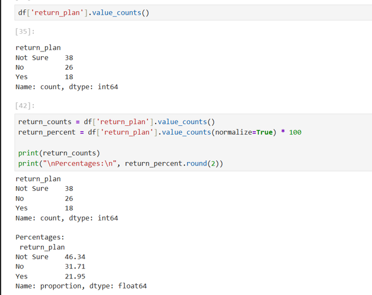
The dataset consists of 82 complete survey responses with no missing observations across key analytical variables, ensuring full data integrity within the sampled population.
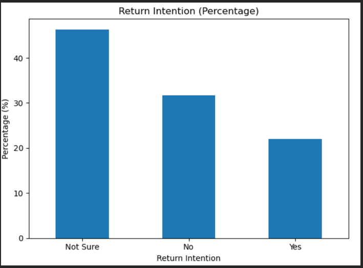
Analysis of return intentions reveals a clearly uneven distribution. Among respondents, 21.95% (n = 18) report that they plan to return to Myanmar after completing their studies. In contrast, 31.71% (n = 26) state that they do not intend to return, while 46.34% (n = 38) remain uncertain about their future decision.
The largest subgroup is composed of students who are undecided, representing nearly half of all respondents. Confirmed return intention accounts for only approximately one-fifth of the sample. This indicates that return migration intentions are not strongly consolidated toward repatriation.
The distribution suggests a potentially elevated risk of continued outward human capital mobility, particularly if structural and economic conditions remain unchanged.
To quantify potential outward mobility, a Brain Drain Risk Index was constructed. This indicator combines the proportion of respondents who either do not plan to return or remain uncertain.
The calculated Brain Drain Risk is:
78.0%
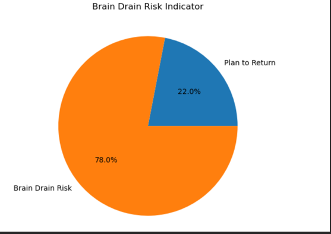
This implies that more than three-quarters of surveyed students are either disinclined to return or lack sufficient certainty to commit to repatriation.
Using the predefined classification framework:
The observed value places the sample within the High Brain Drain Risk category.
Importantly, the largest component of this risk is the undecided group (46.34%). Unlike respondents who explicitly reject return, this subgroup represents a strategic policy opportunity. With improved employment prospects, competitive wage structures, institutional stability, and professional development pathways, undecided students may shift toward return migration.
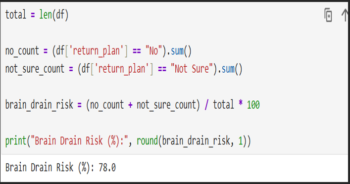
From a statistical perspective, several structural patterns emerge:
First, the distribution of return intentions is not symmetric and does not center around a majority return preference.
Second, the modal category is "Not Sure," rather than "Yes" or "No," indicating substantial uncertainty in long-term planning.
Third, confirmed return intention (21.95%) is substantially below the 50% majority benchmark often used as a neutral expectation in migration studies.
Finally, the undecided group alone exceeds the confirmed return group by more than double.
Collectively, these findings indicate:
These patterns suggest that return decisions are likely influenced by perceptions of opportunity structures rather than purely personal preference.
To evaluate whether the observed return rate differs significantly from a neutral benchmark of 50%, a one-sample proportion z-test was conducted.
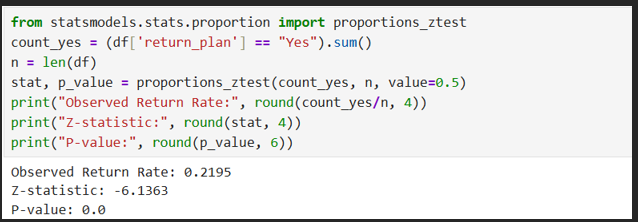
The hypotheses were defined as:
The observed return rate in the sample is 21.95% (n = 18 out of 82).
The test results are as follows:
Given that the p-value is substantially below the conventional 0.05 significance threshold, the null hypothesis is rejected. This indicates that the proportion of students intending to return is statistically significantly different from 50%. Specifically, the observed return rate is significantly lower than the 50% benchmark.
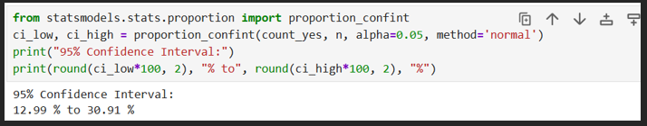
A 95% confidence interval was calculated to estimate the plausible range of the true population return rate.
The interval is:
12.99% to 30.91%
This interval does not include 50%, further reinforcing the statistical conclusion that the true return intention rate is substantially below a majority threshold. The relatively narrow range indicates moderate statistical precision given the sample size (n = 82). Even at the upper bound (30.91%), the return rate remains well below 50%.
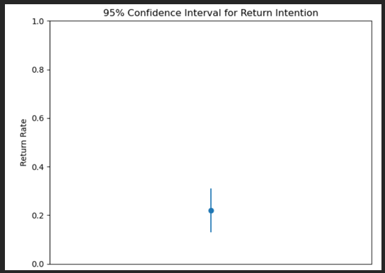
Interpretation
From a policy perspective, these findings provide quantitative evidence that confirmed return intention among surveyed Myanmar students abroad is not merely descriptively low but statistically significantly below a neutral expectation level. This strengthens the argument that the observed pattern reflects structural migration tendencies rather than random variation within a small sample. Importantly, while only 21.95% express confirmed intent to return, the confidence interval suggests that even under favorable estimation, fewer than one-third of internationally educated students in this sample are likely to commit to repatriation.
Insight
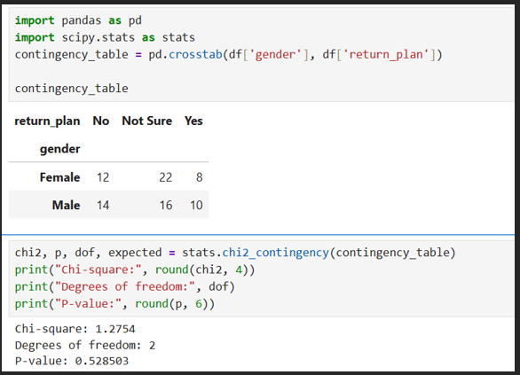
To examine whether return intention differs by gender, a chi-square test of independence was conducted. The contingency table presents the distribution of return intentions across male and female respondents. Although minor proportional differences are observable, the statistical test results indicate:
Since the p-value exceeds the conventional 0.05 significance threshold, the null hypothesis of independence cannot be rejected. This indicates that there is no statistically significant association between gender and return intention within the sample.
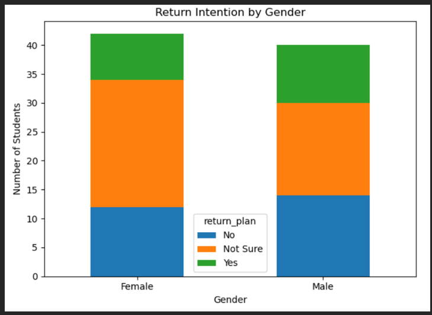
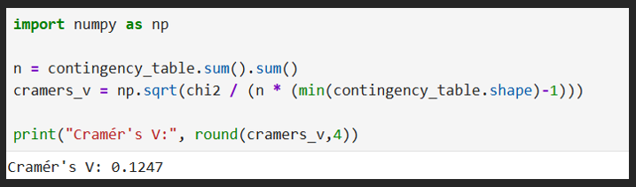
To assess the magnitude of the relationship, Cramér's V was calculated. The resulting value (V = 0.12) indicates a weak association according to conventional effect size benchmarks. This further supports the conclusion that gender does not exert a meaningful influence on return decision patterns in this dataset.
The absence of statistical significance, combined with the small effect size, suggests that observed differences across gender categories are likely attributable to sampling variation rather than structural behavioral divergence. Therefore, gender does not appear to function as a determining factor in return intention within the sampled population.
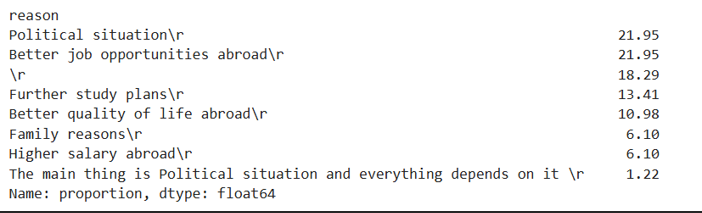
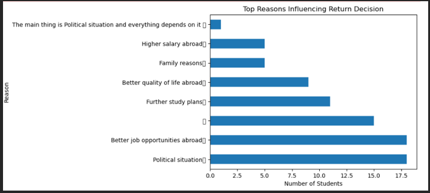
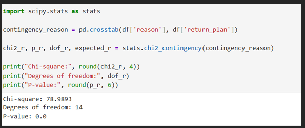
To examine whether return intention is associated with respondents' primary stated reason, a chi-square test of independence was conducted. The results indicate a statistically significant relationship between reason and return intention:
χ²(14)=78.99
p < 0.001
Since the p-value is well below the 0.05 significance threshold, the null hypothesis of independence is rejected. This confirms that return intention is not randomly distributed across reasons but is structurally associated with the motivations reported by respondents.
The distribution pattern reveals clear clustering effects. Respondents citing political situation, better job opportunities abroad, higher salary abroad, or better quality of life abroad are overwhelmingly concentrated in the "No" and "Not Sure" categories. In contrast, confirmed return intention ("Yes") appears primarily concentrated within family-related considerations.
To assess the magnitude of this association, Cramér's V was calculated. The resulting value:
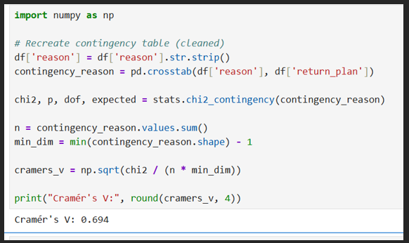
Cramér's V = 0.69 indicates a strong association between stated reason and return intention. According to conventional benchmarks, values above 0.50 reflect substantial effect size. This suggests that the relationship is not only statistically significant but also practically meaningful.
The findings therefore demonstrate that return intention is structurally conditioned rather than demographically determined. Unlike gender, which showed no significant effect, stated reason exhibits high explanatory power. Political and economic confidence emerge as central determinants in shaping repatriation decisions within the sampled population.
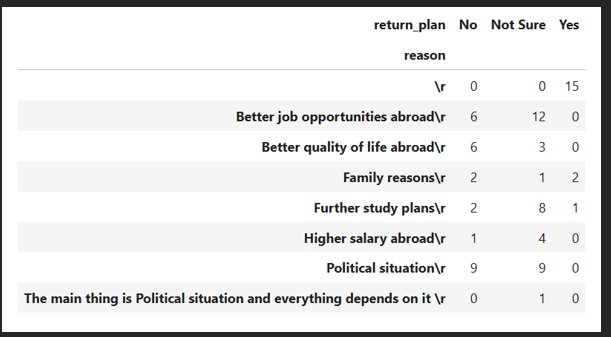
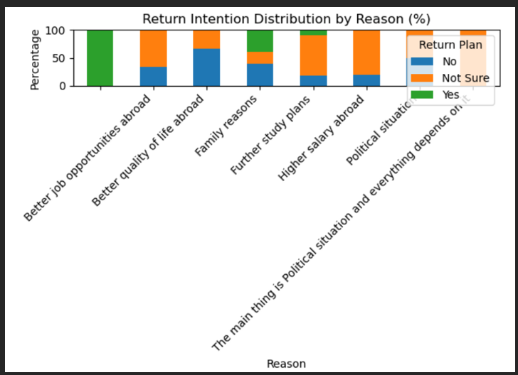
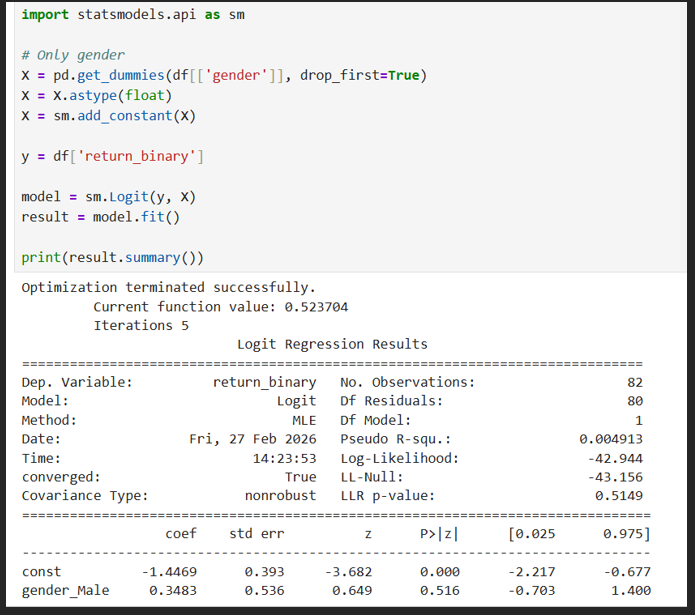
A binary logistic regression was conducted to assess whether gender predicts confirmed return intention. The model was not statistically significant (LLR p = 0.515), and the pseudo R² value (0.0049) indicates minimal explanatory power. Although male students exhibited slightly higher odds of return (OR = 1.42), this effect was not statistically significant (p = 0.516). These results suggest that gender does not meaningfully influence return decision patterns within the sample.
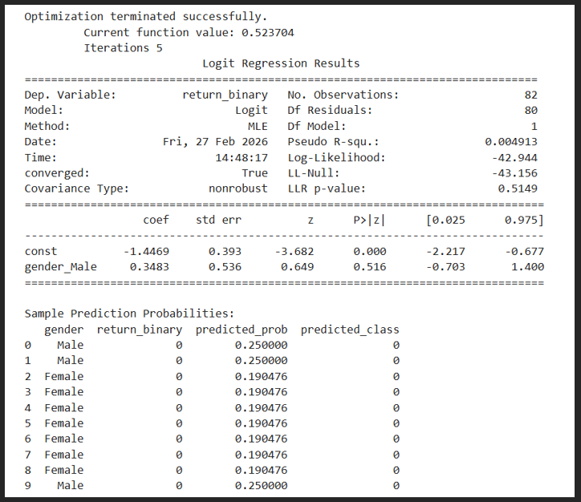
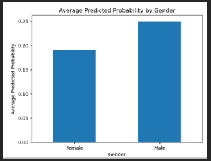
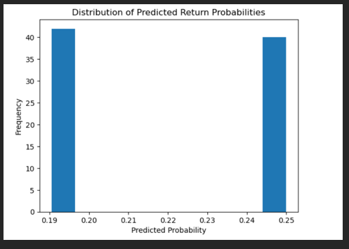
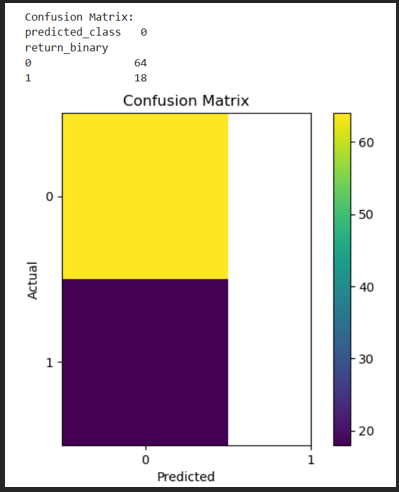
This study examined determinants of return intention among students using descriptive statistics, chi-square analysis, and logistic regression modeling.
Chi-square analysis revealed no statistically significant association between gender and return intention. Logistic regression further confirmed that gender does not significantly predict confirmed return probability (p > 0.05), and the model demonstrated minimal explanatory power (Pseudo R² ≈ 0.005).
However, cross-tabulation of return intention and stated reasons revealed a structurally strong relationship. Students citing political or economic reasons exhibited an almost uniform pattern of non-return intention, producing quasi-complete separation in logistic regression. This indicates that structural push factors (political instability, economic constraints, job opportunities abroad) are strongly associated with brain drain risk.
In contrast, students grouped outside structural categories demonstrated substantially higher confirmed return rates.
Overall, the findings
These all results highlight the importance of institutional and structural reforms in addressing return migration patterns.